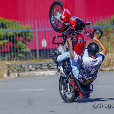

Ainda na primeira geração da CG 125, a Honda adotou uma solução já vista na indústria automotiva para driblar os
efeitos das seguidas crises do petróleo na década de 1970. Em 1981, a empresa apresentou a CG 125 Álcool, a primeira
moto do mundo a sair de fábrica podendo ser abastecida com etanol. Para ajudar nas partidas a frio, recebia até um
tanque auxiliar de gasolina sob o banco.
Desde muito cedo na carreira, a Honda sempre investiu bastante em versões diferentes sobre a plataforma da CG. Nos
primeiros anos havia a opção pela luxuosa ML, com atributos como freio a disco e marcador de combustível, e pela
esportiva Turuna. Em 1988, veio a CG Cargo, que dispensava o banco do garupa em prol de um suporte de carga
reforçado. Já em 1994 surgiu o nome TItan, que até hoje é usado para a versão mais completa da moto.